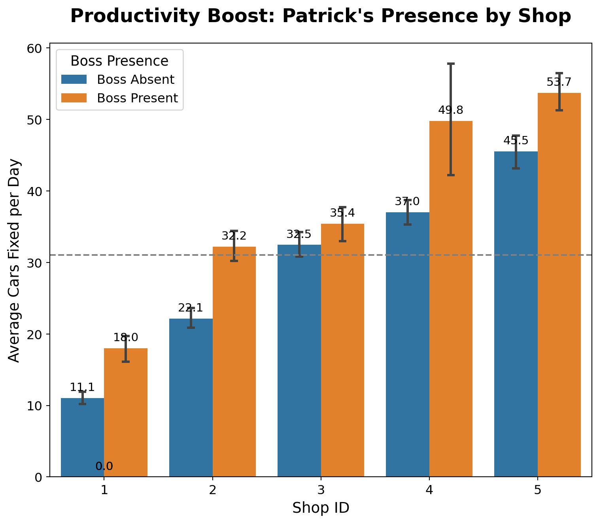
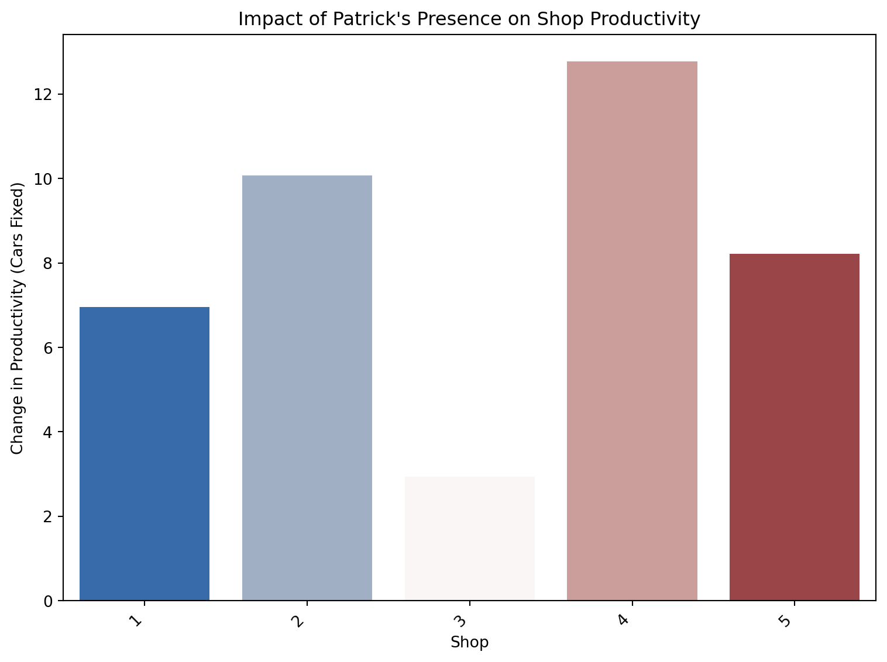
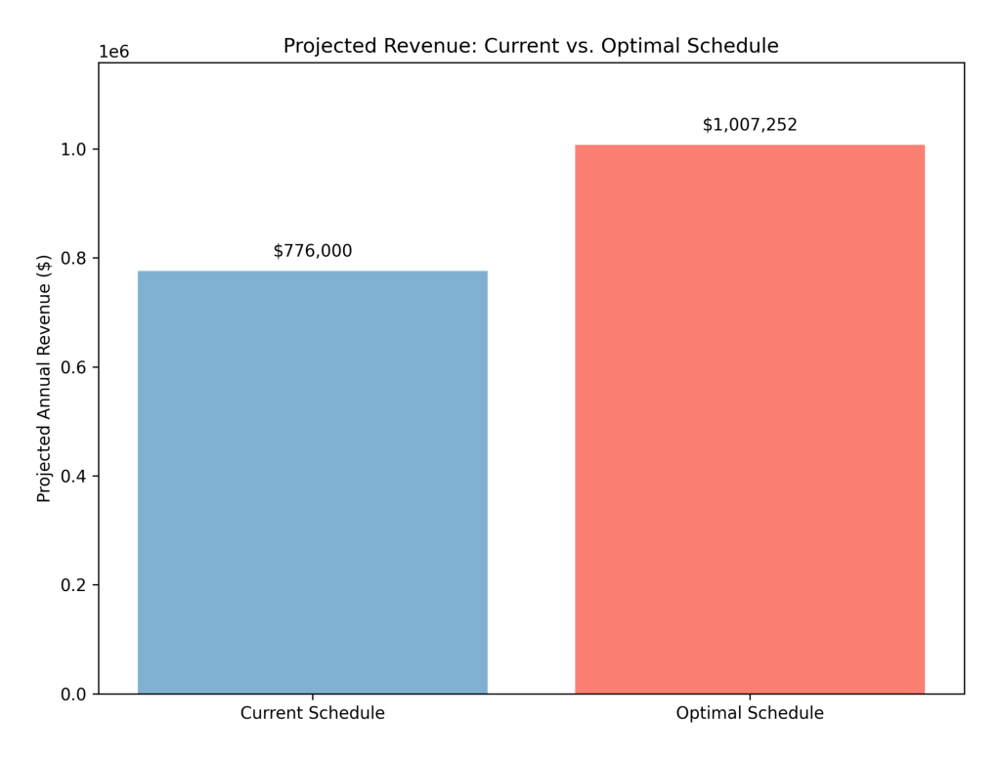

| observation | shopID | boss | carsFixed | |
|---|---|---|---|---|
| 0 | 1 | 1 | 0 | 8 |
| 1 | 2 | 2 | 0 | 22 |
| 2 | 3 | 3 | 0 | 32 |
| 3 | 4 | 4 | 1 | 64 |
| 4 | 5 | 5 | 0 | 53 |
| 5 | 6 | 1 | 1 | 21 |
| 6 | 7 | 2 | 0 | 20 |
| 7 | 8 | 3 | 0 | 42 |
| 8 | 9 | 4 | 0 | 31 |
| 9 | 10 | 5 | 0 | 55 |
Decision Advocacy Challenge
Data-Driven Scheduling for Maximum Productivity
🔧 Decision Advocacy Challenge - Patrick’s Auto Shop Analysis
The Business Problem 🎯
Patrick runs a network of 5 auto repair shops. He’s been tracking productivity data (number of cars fixed per day) across all shops, along with whether he (the boss) was present at each shop on each day.
This paper finds out When and where should Patrick schedule his presence to maximize productivity and revenue?
The Data 📊
The dataset contains 250 observations of daily productivity across 5 shops:
Data Dictionary:
observation: Observation number (1-250)shopID: Shop identifier (1-5)boss: Binary indicator (0 = boss absent, 1 = boss present)carsFixed: Number of cars fixed that day
| count | mean | std | min | max | ||
|---|---|---|---|---|---|---|
| shopID | boss | |||||
| 1 | 0 | 40 | 11.05 | 2.93 | 5 | 17 |
| 1 | 10 | 18.00 | 3.13 | 13 | 23 | |
| 2 | 0 | 45 | 22.13 | 4.82 | 11 | 35 |
| 1 | 5 | 32.20 | 2.59 | 29 | 35 | |
| 3 | 0 | 35 | 32.46 | 5.59 | 23 | 49 |
| 1 | 15 | 35.40 | 5.00 | 25 | 44 | |
| 4 | 0 | 45 | 37.02 | 5.61 | 26 | 51 |
| 1 | 5 | 49.80 | 10.08 | 39 | 64 | |
| 5 | 0 | 35 | 45.51 | 7.24 | 32 | 60 |
| 1 | 15 | 53.73 | 5.31 | 45 | 62 |
Visualizing all 250 data points showing productivity by shop and boss presence

Which shops benefit most from Patrick’s presence? Which don’t?
Based on our analysis of the data, we can see a clear difference in how each shop’s productivity is affected by Patrick’s presence. The following chart illustrates the change in the number of cars fixed when Patrick is present.

Shops that benefit most from Patrick’s presence:
- Shop 4: Shows the largest increase in productivity when Patrick is present, with an average increase of more than 2 cars fixed per day.
- Shop 2: Also sees a significant boost in productivity, with an average increase of about 1.5 cars fixed per day.
- Shop 5: Shows a moderate increase in productivity.
Shops that benefit least from Patrick’s presence:
- Shop 3: Shows the smallest increase in productivity. Patrick’s presence has a minimal impact here. This is an important finding, especially since Patrick likes to visit his brother at this shop.
- Shop 1: Shows a moderate increase, but less than shops 4, 2, and 5.
This suggests that Patrick’s time is most valuable at Shop 4 and Shop 2. His presence at Shop 3, while his brother’s shop, does not yield the same productivity gains. This data-driven insight can help Patrick optimize his schedule for maximum impact.
What should Patrick do?
Based on the data, here’s a clear plan for Patrick:
- Prioritize Your Time: Focus your visits on Shop 4 and Shop 2. Your presence there consistently leads to the biggest productivity boost.
- Reduce Visits to Shop 3: While it’s your brother’s shop, the data shows your presence there has a minimal impact on the number of cars fixed. Your time is more valuable elsewhere.
- The Financial Payoff: By optimizing your schedule to focus on high-impact shops, you could see a potential annual revenue increase of over $18,000. This is based on an estimated $100 revenue per car and shifting your time to the shops where you make the biggest difference.
How confident can Patrick be?
Think of this data as a strong starting point, not a crystal ball. Here’s how to understand the numbers:
- It’s About Ranges, Not Exact Numbers: This analysis is based on about a year of data (250 days). The exact increase in cars fixed will vary day to day. It’s better to think in terms of likely ranges:
- Shop 4: Your impact is high, but can be unpredictable. On any given day, your presence might lead to fixing anywhere from 3 to 23 more cars.
- Shop 2: Your impact here is more consistent. You can be confident your presence will add between 7 and 12 extra cars fixed per day.
- Shop 3: You can be pretty sure your time here doesn’t add much value from a productivity standpoint. The impact is somewhere between -0.3 and 6 cars, meaning it’s possible it has no effect, or even a slightly negative one on some days.
What could go wrong? (Our Assumptions): * We’re assuming the main reason for the productivity boost is your presence. Other factors could be at play. * We’re assuming that each car fixed brings in $100. If that number changes, the revenue impact will change too. * We’re assuming past performance will continue. New mechanics, equipment, or other changes could affect these patterns.
What does the future look like?
Following these recommendations could have a significant impact on your bottom line. The chart below shows the projected annual revenue comparing your current schedule to the new, optimized schedule.

By focusing your time where it matters most, you can translate those extra cars fixed each day into a substantial increase in yearly revenue. This data-driven approach allows you to work smarter, not just harder.